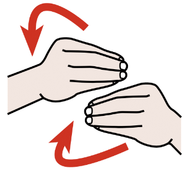
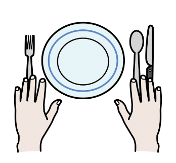

WAI-Adapt Task Force
Accessibility Platform Architectures WG
Many people benefit from symbols with text. WAI-Adapt enables authors to add symbolic data to content.
Example: Using ARASAAC
| My Favorite Recipe Video (chapter list) | |
| Ingredients | |
|  | Prepping |
| Cooking | |
|  | Plate and taste |